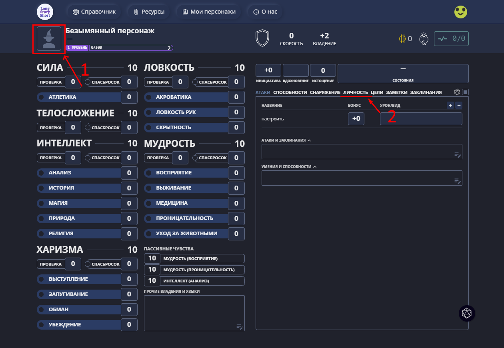

Самый главный этап в любой ролевой игре — создание персонажа. Эта статья должна помочь вам создать своего первого персонажа. .
Главный сайт, который является важнейшим инструментом во время игры в SMORCH — LongStoryShort. Здесь вы будете совершать броски и проверки характеристик, следить за здоровьем и деньгами, записывать лут, и так далее. Вам необходимо зайти во вкладку "Мои персонажи" в верхней части страницы. Создав там персонажа, первое что вам стоит сделать это нажать на пустой портрет в верхней части страницы, и в настройках выбрать Имя персонажа, Расу и Класс, и желательно поставить аватар. Следующим шагом будет зайти во влкладку личность и прописать там предысторию персонажа, внешние данные, выбрать Мировоззрение(ссылка исключительно для получения примерного понимания, трактовки мировоззрений являются исключительно субъективными).
Когда вы выполнили указанные выше шаги, необходимо распределить очки характеристик. Тут всё аналогично системе закупа из D&D 5й редакции: у вас есть стандартное значение характеристик в 8, и 27 очков которые вы распределяете по своему желанию. Настоятельно рекомендую распределять характеристики для для эффективного билда, а отыгрыша! Распределять характеристики наиболее удобно с помощью сайта.
Имея личность и характеристики персонажа, следующим шагом будет создание способностей. Главной особенностью НРИ по SMORCH является наличие механики кастомных способностей. Вам необходимо самим придумать свои собственные, уникальные "абилки". Однако сами вы готовые способности не создадите, а поэтому вам необходимо ознакомиться с основами создания способностей в отдельной статье, набросать желаемые скиллы, и после чего идти к вашему текущему мастеру, чтобы он на основе ваших набросков, вмести с вами уже сделал готовые способности. Готовые способности необходимо вносить во вкладку "Заклинания", на всё том-же Лонгсторишорте. Также, помимо набора уникальных способностей, существует система классов, однако реальное значение они имеют только со второго уровня, поэтому вопрос выбора класса необходимо обсуждать лично с вашим или любым свободным мастером.
К этому моменту ваш персонаж должен быть по большей части готов. Теперь вам остаётся только скачать персонажа с LongStoryShort в виде файла.json, и отправить вашему мастеру. Если чего-то пропустили, - не страшно. Мастер подправит и отправит вам доделанный файл персонажа, или в крайнем случае подправите на ходу. Удачной игры, и что самое главное, интересных историй!